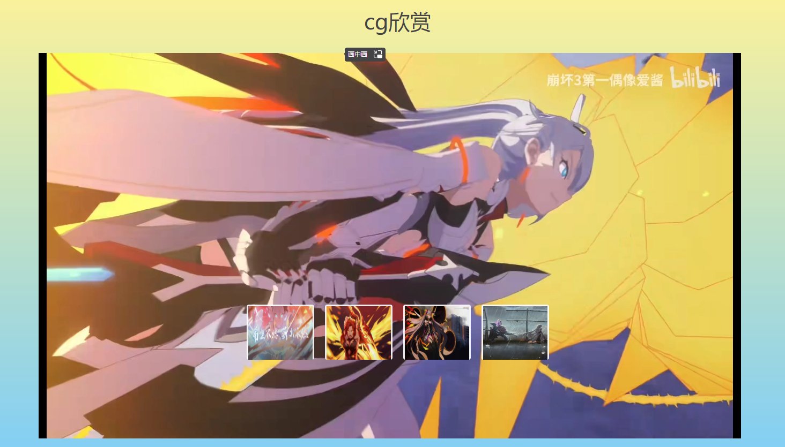
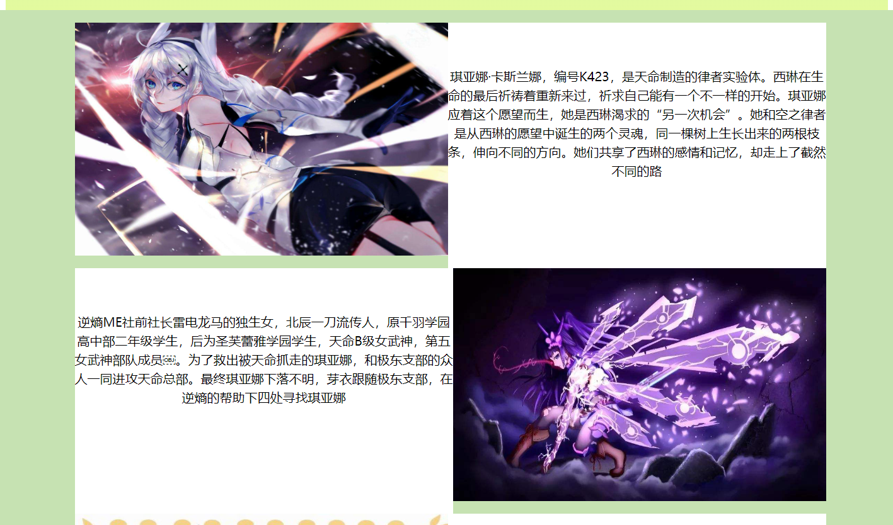
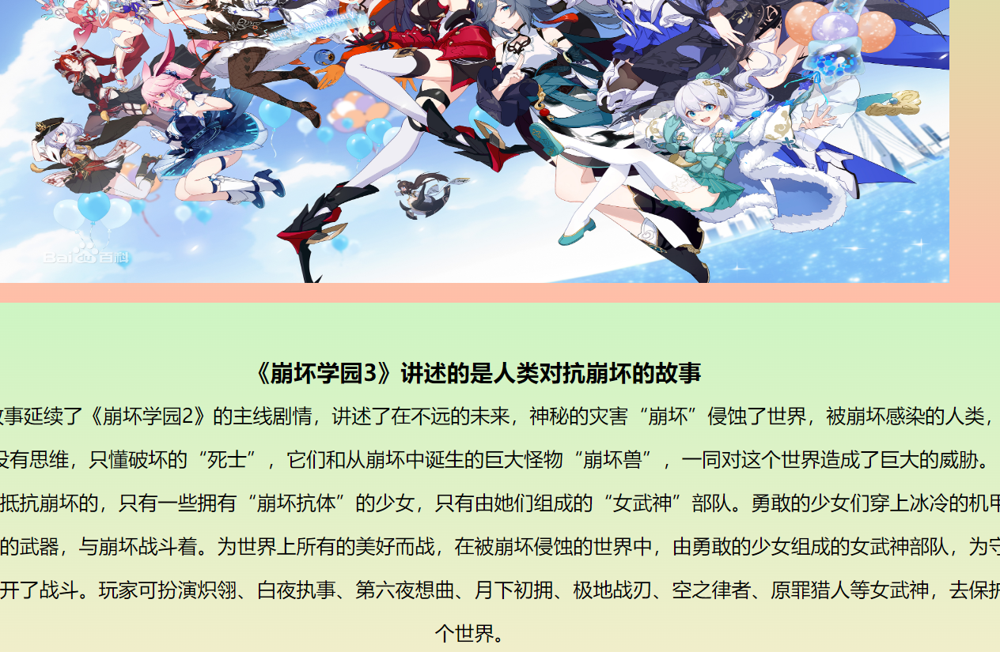
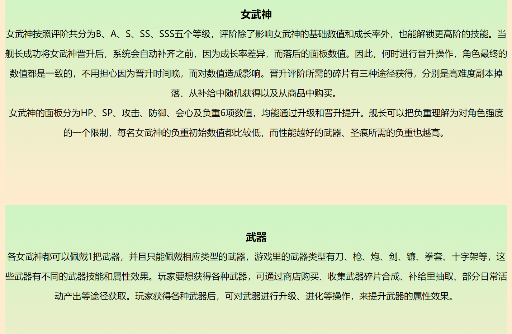
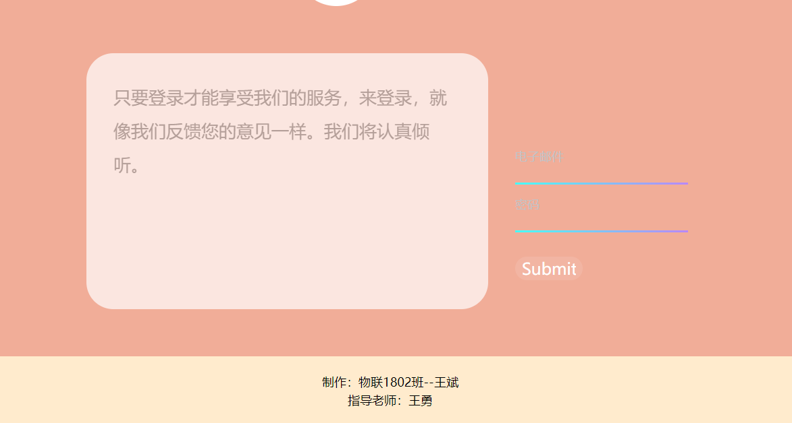

《崩坏3》是由米哈游科技（上海）有限公司制作发行的一款角色扮演类国产手游，该作于2016年10月14日全平台公测；2020年12月24日，登陆WeGame ；2021年11月4日，游戏正式登陆Steam 。
游戏讲述了世界受到神秘灾害“崩坏”侵蚀的故事，玩家可扮演炽翎、白夜执事、第六夜想曲、月下初拥、极地战刃、空之律者、原罪猎人等女武神，去抵抗崩坏的入侵，维护好这个世界的和平。游戏拥有圣痕系统、女武神等战斗培养元素，还引入乱斗竞速、舰团战等PVP玩法 。
2021年11月4日， 由米哈游制作发行手游《崩坏3》的PC移植版《崩坏3》正式在Steam平台开放 。
网站的设计：DIV和视频图片的结合，使得整个网站结构清晰明了。多个页面之间实现了相互连接，更使得整个网站生动活泼，趣味盎然。
网站的主题：游戏《崩坏学园3》
网站的风格：网站使用丰富的色彩以及背景，使得整个网站的风格新明生动。同时网站利用文字和图片结合、视频和图片结合，让人更容易了解整个网站的布局,
色彩方案：本网站的所有网页主要以暖色调的颜色为主。利用较少的颜色，达到丰富的效果。网站的页面效果虽然看起来有点花哨，但是还是比较简洁和有趣的。
这个界面主要是对本游戏的个人感觉比较印象深刻的角色以及cg进行了展示。在对图片和视频相对应进行处理的时候，主要对图片的一个属性进行了设计，将图片设计成了onclick属性绑定到了一个视频的url上，从而实现点击一张图片，就可以展示相对应的视频内容。
本界面主要是对游戏中出现的主要角色进行了展示。采用的方法是图片和文字相结合，通过图片和文字左右相对应使得界面看起来更加的美观。
本界面主要使用了两个box来盛放标题以及正文内容。主要展示的内容是游戏的开始时候的大概剧情。
本界面主要使用了几个box来分别介绍游戏内的机制，让使用网页的人可以对本游戏更加清楚地了解。
这个界面主要设计了两个可供人输入的输入框，用户可以向其中输入对应的电子邮件以及密码。但由于这只是单纯的ui设计，并没有涉及数据库的内容，所以就算点击了submit也不会有反馈。
问题1：不能实现首行缩进，文字段落看起来不是很舒服。 解决方法：在css文件中通过设置text-indent属性为2em来实现首行缩进两个字符。
问题2：写了代码但是没有效果。 解决办法：清空缓存；换一个浏览器；对照文档检查。
问题3：有时候浏览器打开时显示无法找到文件。 解决办法：在网上查找相关资料时发现，是因为新更改的内容没有保存才会出现该错误，保存后再在浏览器中打开即可。
未解决的问题：在网页文档中，图片太大，但又不想通过设点固定格式来缩小图片实现效果。 未实现的方法：在最后的联系界面中，虽然是有一个用户输入电子邮件的账号以及密码，但是由于时间以及技术原因，只是实现了简单的ui界面，并没有后端的数据操作，没有将用户输入的数据存储到后台。争取在后面的学习中，实现wen的前后端交互，实现前端交互时候，可以对数据进行增删改查功能。
从制作网页过程中，我学到了新的美化网页的方法，运用了更多以前未运用的技巧。这使我学到了更多的知识，并且为我自己在制作网页这方面积累了一些经验。这些将是我人生中的一次重要的经历，将是我今后走上社会后的一笔巨大的财富。这次实习的收获对我来说有不少，我自己感觉在知识、技能等方面都有了不少的收获。总体来说这次是对我的综合素质的培养，锻炼和提高。
做好页面，并不是一件容易的事，它包括个人主页的选题、内容采集整理、图片的处理、页面的排版设置、背景及其整套网页的色调等很多东西。本次课程设计不是很好，页面过于简单，创新意识反面薄弱，这是我需要提高的地方。需要学的地方还有很多，需要有耐心、坚持，不断的学习，综合运用多种知识，才能设计出好的web页面。